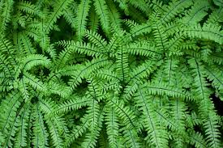

Pteridaceae
Maidenhair Fern Family / Brake Family
Pteridaceae is a large and exceptionally diverse family of leptosporangiate ferns in the order Polypodiales, containing about 50-60 genera and over 1150 species. Members are found worldwide (cosmopolitan) and occupy an extraordinary range of habitats, including arid rock crevices, tropical rainforest floors, epiphytic niches, and even aquatic environments. A key unifying feature is the absence of true indusia; spore protection is often provided by the reflexed (in-rolled) leaf margin (false indusium), or sori may be naked or spread along veins.
Overview
Pteridaceae is one of the largest and most morphologically diverse fern families. It includes well-known groups like the delicate Maidenhair Ferns (Adiantum), the common Brake Ferns (Pteris), the desiccation-tolerant Cliff Brakes and Cloak Ferns often found in arid regions (Pellaea, Cheilanthes), the epiphytic Shoestring Ferns (Vittaria), and even free-floating aquatic ferns (Ceratopteris). This ecological breadth is remarkable, spanning nearly all terrestrial and some aquatic habitats.
The family is defined primarily by reproductive characters: the sori (spore clusters) are typically located near or at the frond margin and lack a true indusium (a specialized tissue flap covering the sorus). Instead, protection is often afforded by the in-rolled edge of the leaf itself, creating a "false indusium". In some groups, sori may run along the veins or even cover the entire underside of fertile segments (acrostichoid condition), and may be naked (lacking any covering).
Many species are cultivated horticulturally, including numerous cultivars of Adiantum, Pteris, and Pellaea. Some, like Ceratopteris, are used in aquariums. The family also includes ferns adapted to extreme environments, making them subjects of interest for physiological and ecological research.
Quick Facts
- Scientific Name: Pteridaceae
- Common Name: Maidenhair Fern family, Brake family
- Number of Genera: Approximately 50-60+
- Number of Species: Approximately 1150-1200+
- Distribution: Cosmopolitan (worldwide), diverse habitats including arid, tropical, temperate, epiphytic, aquatic.
- Evolutionary Group: Monilophytes - Leptosporangiate Ferns - Polypodiales
Key Characteristics
Habit and Rhizome
Plants are perennial ferns (except Ceratopteris, often annual). Habit is highly variable: terrestrial, epipetric (rock-dwelling), epiphytic, or aquatic. Rhizomes can be long-creeping, short-creeping, or erect, and are typically covered in scales (which are usually not clathrate, unlike Aspleniaceae) or sometimes hairs, or a mix.
Fronds (Leaves)
Fronds show extreme variation in size, shape, and texture.
- Stipe (Leaf Stalk): Highly variable; can be thin and wiry (e.g., Adiantum), stout, fleshy, or brittle. Often bears scales or hairs, at least near the base. Vascular bundles 1, 2, or more near the base, often merging upwards.
- Blade (Lamina): Can be simple, pinnate, bipinnate, tripinnate or more finely divided, pedate (foot-like branching, Adiantum), or palmate. Often dimorphic, with sterile (vegetative) and fertile (spore-bearing) fronds differing significantly in shape (e.g., Cryptogramma, Ceratopteris). Texture varies from delicate and membranous to thick and leathery. Undersurface in some groups (especially Cheilanthoideae) may be covered in scales, hairs, or waxy powder (farina).
- Venation: Veins are typically free, but sometimes anastomosing (forming a network), especially in Vittarioideae.
Reproductive Structures (Sori, Spores)
Reproduction is via spores produced in sporangia, clustered into sori, usually on the frond underside.
- Sori (Singular: Sorus): The arrangement is variable but typically marginal or submarginal (near the edge). A key feature is the absence of a true indusium. Protection, when present, is usually provided by the modified, reflexed (in-rolled) and sometimes membranous edge of the leaf segment, forming a false indusium. Sori may be:
- Continuous linear bands along the margin under the false indusium (e.g., Pteris).
- Discrete, short sori at vein endings along the margin, covered by flaps of the false indusium (e.g., Adiantum, many Cheilanthoideae).
- Spread along the veins, sometimes covering the entire surface (acrostichoid) (e.g., Acrostichum).
- Sunken in marginal or intramarginal grooves (e.g., Vittaria).
- Round and naked (lacking any covering) in some Cheilanthoideae.
- Indusium: True indusium absent.
- Sporangia: Typically possess a vertical, often interrupted annulus. Stalks can be long.
- Spores: Spores are typically trilete (having a three-armed scar), tetrahedral-globose in shape. Some groups (e.g., Vittarioideae) have monolete spores. Spore surfaces can be smooth or variously ornamented.
Gametophyte
The haploid gametophyte (prothallus) is typically green, photosynthetic, and often heart-shaped (cordate), but can be strap-shaped or filamentous in some groups (e.g., Vittarioideae).
Field Identification
Identifying Pteridaceae relies critically on observing the sorus position and the absence of a true indusium, often combined with the presence of a false indusium (reflexed margin). Frond morphology and habitat are also very important clues due to the family's diversity.
Primary Identification Features
- True Indusium Absent: Sori are not covered by a specialized tissue flap originating beneath them.
- False Indusium Often Present: Sori frequently protected by the in-rolled or modified leaf margin.
- Sorus Position: Typically marginal or submarginal (continuous or interrupted), OR spread along veins (acrostichoid), OR sunken in grooves.
- Spore Type: Mostly trilete (requires microscopy).
- Frond Morphology: Highly variable - simple, pinnate, pedate, palmate, finely divided, often dimorphic. Check for hairs, scales, or farina on the underside.
- Rhizome Scales/Hairs: Usually present, but typically not clathrate (cf. Aspleniaceae).
- Habitat: Extremely variable - key clue for certain groups (e.g., arid rock crevices for Cheilanthoideae, aquatic for Ceratopteris, epiphytic for Vittarioideae).
Seasonal Identification Tips
- Fertile Fronds: Essential for observing soral characteristics (position, false indusium). Check during sporulating season.
- Sterile Fronds: May differ significantly in dimorphic species.
Common Confusion Points
- Families with True Indusia (Aspleniaceae, Dryopteridaceae, Athyriaceae, Blechnaceae, Thelypteridaceae, etc.): Distinguished by the presence of a true indusium covering the sorus (linear, kidney-shaped, J-shaped, etc.).
- Polypodiaceae (Polypody Family): Also lack true indusia, but sori are typically round or oval and located away from the margin (not covered by a reflexed margin). Often epiphytic with jointed stipes.
- Dennstaedtiaceae (some genera like Dennstaedtia, Hypolepis): Can have marginal sori protected by a reflexed margin, but often combined with a rudimentary inner true indusium (forming a cup or purse shape), or have different frond cutting/hairiness.
- Hymenophyllaceae (Filmy Ferns): Have marginal sori, but fronds are typically only one cell thick (filmy texture), and sporangia are borne on a receptacle within a tubular or two-lipped indusium.
Field Guide Quick Reference
Look For:
- Fern habit (highly variable habitat)
- True indusium ABSENT
- Sori often marginal/submarginal
- False indusium (reflexed margin) common
- OR sori acrostichoid / along veins / naked
- Spores mostly trilete
- Fronds highly variable, sometimes dimorphic, hairy, scaly, or powdery
- Rhizome scales usually non-clathrate
Key Distinctions:
- vs. Aspleniaceae/Dryopteridaceae etc.: Pteridaceae lacks true indusium.
- vs. Polypodiaceae: Pteridaceae sori often marginal & protected by margin (if protected); Polypodiaceae sori round/oval, exindusiate, often away from margin.
Notable Examples
Pteridaceae includes many well-known ferns adapted to diverse conditions:

Adiantum capillus-veneris
Southern Maidenhair Fern
A delicate, widely distributed fern often found on moist, shaded limestone or mortar. Characterized by its wiry black stipes and fan-shaped pinnules with sori borne under reflexed marginal flaps.

Pteris cretica
Cretan Brake, Table Fern
A common houseplant and widespread fern with pinnate or palmately divided fronds. Sori form continuous lines along the segment margins, covered by the reflexed edge (false indusium).

Cheilanthes lanosa
Hairy Lip Fern
A small fern adapted to dry, rocky habitats in eastern North America. Fronds are finely divided (bipinnate-pinnatifid) and covered in hairs. Sori are marginal, protected by the in-rolled edge of the segments.

Ceratopteris thalictroides
Water Sprite, Indian Fern
An aquatic or semi-aquatic fern found in tropical regions worldwide. Fronds are highly dimorphic; sterile fronds often float and are broad, while fertile fronds are finely divided with linear segments, the margins reflexed over the sori. Often proliferates vegetatively via buds.
Phylogeny and Classification
Pteridaceae is a large family within the order Polypodiales. It belongs to the "eupolypods" clade, often placed within the eupolypods I subgroup, which is distinct from the eupolypods II subgroup containing families like Aspleniaceae and Dryopteridaceae. The family's monophyly is well-supported by molecular data, although relationships among its major constituent subfamilies (e.g., Cheilanthoideae, Pteridoideae, Vittarioideae, Parkerioideae, Adiantoidiae) are areas of active research.
The traditional defining character (absence of true indusia, sori often marginal) unites a morphologically and ecologically diverse group, suggesting that this soral condition may have evolved early or multiple times within the lineage. The adaptations seen in groups like the Cheilanthoideae (to dry conditions) and Parkerioideae (Ceratopteris, to aquatic conditions) represent significant evolutionary radiations within the family.
Position in Plant Phylogeny
- Kingdom: Plantae
- Clade: Tracheophytes (Vascular Plants)
- Clade: Monilophytes (Ferns and Horsetails)
- Class: Polypodiopsida (Leptosporangiate Ferns)
- Order: Polypodiales
- Family: Pteridaceae
Evolutionary Significance
Pteridaceae is highly significant in fern evolution:
- Ecological Radiation: Shows exceptional adaptation to a vast range of habitats, from deserts (Cheilanthoideae) to rainforests and aquatic environments (Ceratopteris), making it a key group for studying ecological diversification in ferns.
- Morphological Diversity: Encompasses immense variation in frond size, shape, dissection, and surface coverings (hairs, scales, farina).
- Evolution of Soral Protection: The prevalent use of a reflexed margin (false indusium) instead of a true indusium represents a major alternative strategy for spore protection.
- Phylogenetic Importance: As a large clade within eupolypods I, it is crucial for understanding the overall phylogeny and evolution of the Polypodiales order.